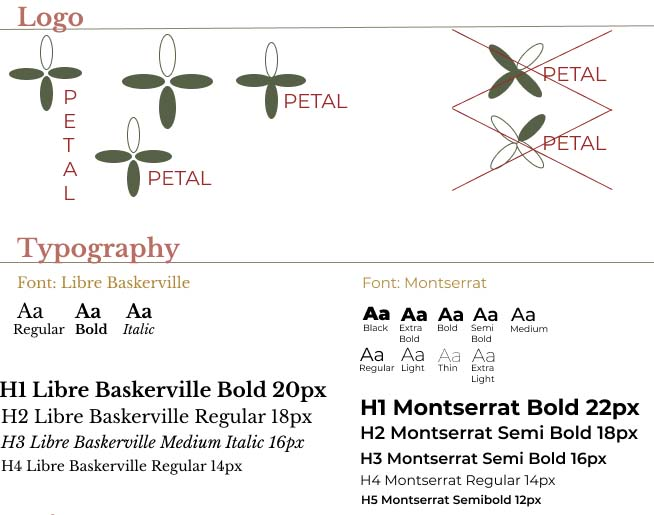
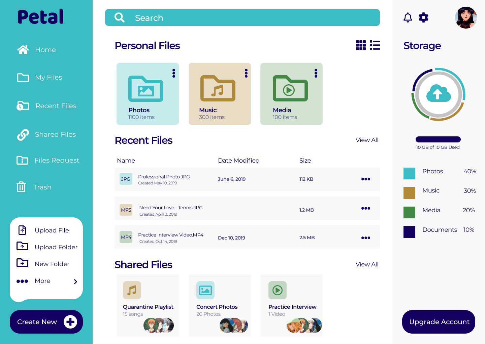
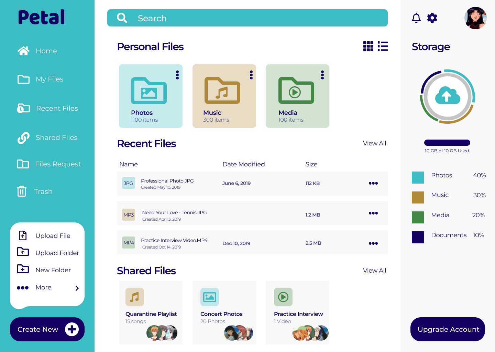

Petal Cloud Storage
Roles
- User Research
- UX/UI Design
- Branding
- Visual Design
- User Testing
Problem
Fellow stakeholders and investors are interested in creating a cloud storage platform that differs from other competitors in the market.
Things to consider:
- How can we differentiate this new brand from already well-known competitors?
- What are the main goals of this platform?
Solution
My solution to this brief is Petal, a cloud organizational web and mobile platform focused on user friendliness, organization, and accessibility. This platform aims to aid its users by providing access to their data through multiple devices. Petal also stores user files and allows them to stay organized, as well as share and save links with other users.
Research
To fully understand the current cloud storage market and how people utilize these platforms, I created a user survey catered toward the client briefing. I sent this survey to the general public to gain some insight into a new cloud service that could potentially fill in the missing pieces. From the survey results I noticed a few key takeaways:
- First, the majority of users thought security was a main concern when it came to cloud service platforms. Users were worried that their files would get hacked or deleted.
- Second, users would like to see improvement on the functionality of the cloud platform. They would like to have the ability to organize files, but also make sure the platform does not crash while doing so.
- Lastly, users were concerned about the privacy of their cloud service. Users mentioned that they did not want their personal data accessible to the outside world.
Competitive Anaylsis
I performed a competitive analysis of a diverse range of cloud storage platforms that each brought something different to the cloud storage market. I analyzed Dropbox and Google Drive because they are the market leaders in this industry and the most recognizable in my survey. I also analyzed Pinterest for its different approach of social media sharing to cloud storage.


With these competitors in mind, a new potential platform can provide a service with better security for the user so their files do not get hacked. For example: if a user uploads a file into the cloud, the platform can provide an internal virus scanner that scans any uploaded file. Additionally, this new platform would provide better updates that will eliminate system crashes and provide weekly backup options to users to they can stay on top of backing up their files.
Full SWOTUser Personas
I interviewed two people in person from my survey to talk in depth about their experiences with cloud storage platforms. From these interviews, I realized that even though their backgrounds were different, they both shared the same frustrations of expensive monthly plans and lack of security.


User Flow
Next, I started sketching out possible user flows to accomplish the goals of my target audience, based on user stories and user personas. I observed the ways Dropbox, Google Drive, and Pinterest mapped common flows, such as signing in, onboarding, and upgrading. I created my user flows based on what seemed most straightforward and user friendly.
With my user research, stories, and personas, I began to brainstorm and sketch out ideas for the platform with wireframes. I started testing these out right away on people in real life scenarios.
This first round of usability tests highlighted some design inconsistencies in my primary layouts, as well as issues with upgrading the user's storage plan. For my web landing page, a user stated that my grey input boxes looked similar to the primary call-to-action buttons. Additionally, displaying two separate trash can icons proved to be confusing for another user. With my web dashboard page, a user stated that the folder icons looked like they were all open and were thus hard to interpret.


For my mobile application, I had similar feedback with regard to my folder icons being hard to interpret. Another user also stated that my upgrade/pricing table did not have a way to determine which plan was selected, and suggested that I add some sort of radio button or call-to-action button to make this more clear.
See Full Wireframes
Overall, the feedback revealed that the functionality was there, but needed just a bit more work on the design element.
For the Petal Brand, I developed a logo design, style guide, and some illustrations for the overall platform. All of these elements can be put together to represent Petal’s growth as a brand and product.
When sketching out the logo, I had initially wanted to give it a cloud name (like Cirrus or Cumulus), but realized that this idea was already done and very predictable. My second idea was to go with a name like “Vault” because of the association with keeping belongings safe and secure, but I ultimately felt that this idea was not what I wanted to convey to my user. Lastly, I thought of "Petal". I gravitated towards this idea because of the symbolism that it provides: when someone picks a petal from a flower, they are able to carry that with them wherever they go, or preserve it in a book or diary. I liked that this idea can apply to a cloud service as well - when someone wants to access a file on the go, they have the ability to do so on their phone or tablet. Additionally, I loved that a flower/petal represents growth, whether it be in a company or an individual person. I want this tool to help the user achieve that growth, no matter what shape or form.

For my overall style guide, I initially went with earth tones to match the plant theme of my brand. I mainly wanted to stand out by staying away from what was commonly used with the current competitor brands. Regarding the primary font set used in my style guide, I wanted to use clean fonts to contrast with my earthy color scheme. I tested out a few different color schemes with Petal's logo:
Once I adjusted my wireframes based on my first round of usability testing, implemented my style guide, and made my platform more realistic to the user, it was time to perform my second round of usability testing. For my landing page prototype, I was able to improve the center section, made the boxes more round, and added text to the left to prompt the user to input their information. Additionally, I added a navigation bar to the bottom of the page with links to About, Why Join, Contact Us, and Connect.


In my dashboard prototype, I replaced the folder icons with open and closed folder icons that were more distinguishable for the user, and removed the second trash icon.
View PrototypeFor my mobile prototype, I applied the same changes as I did with my web application, but also played around with the coloring to see which way turned out most effective to the user.
View PrototypeUnfortunately, each color scheme variation still made it very hard for the user to see font and icons. As previously stated, my feedback highlighted my font set looked familiar to one another and my color scheme would make it hard for the user to see icons and buttons.


After further iterations and doing further research, I implemented a new, trendier color scheme that was not only more fun but also more appealing and inviting to the user. I thought this color scheme would be a little more calming and engaging as well. I also provided a new font set that consists of Baloo and Montserrat; these fit perfectly with the overall color scheme and layout of the web and mobile application. On the landing page, I added an image to the left, moved the center login to the right side of the page, added social media icons to the bottom of the navigation page, and improved the logo color scheme.
 

The same will apply to my mobile application as well. I improved the landing page by adding an image and improving the color scheme and font.
Conclusion
Watching Petal blossom from idea to prototype was a comprehensive process that provided many lessons for future iterations and projects. A few of these lessons were:
- Stick up for your work, no matter what
- If you don't succeed, try and try again
- What works for you many not work for someone else
With that being said, I would like to thank you for taking the time to view my case study and hope you have a wonderful day.